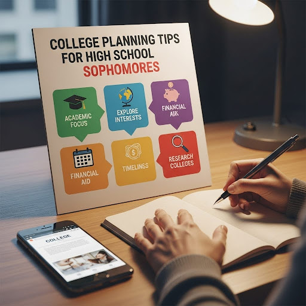
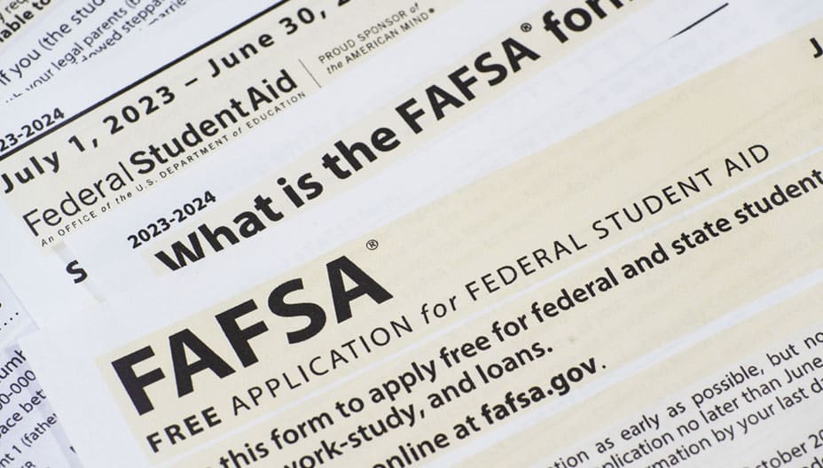
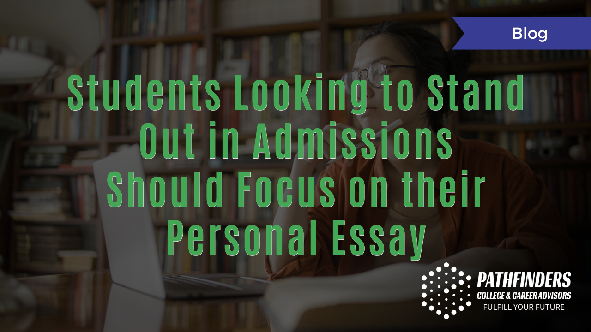

Blog
110 articles

Give the Gift of a Clear Career Path
You have watched their interests change, their talents emerge, and their personalities take shape. Now, as your grandchild approaches college, you may be wondering what you can give them that will truly matter. You want them to find work they enjoy, build independence, and feel confident making decisions. You want the education you help support
Read article
A College Just Cut Tuition by $30,000. Why Families May Not Save a Dime.
Imagine walking into a car dealership and discovering that a vehicle previously priced at $70,000 now costs $40,000. You would probably assume you were saving $30,000. But what if the dealership also eliminated the $30,000 discount you would have received under the old pricing structure? Your actual cost hasn’t changed. That’s essentially what’s happening at
Read article
The Hidden Cost of College: New Federal Rules Put College Value Under the Microscope
When families calculate the cost of college, they typically focus on three numbers: tuition, scholarships and the amount they expect to pay out of pocket. But what if some of the biggest college expenses aren’t included in those calculations? What happens when a student changes colleges and loses a semester of credits? What if a
Read article
Private Student Lending Nearly Doubles at SoFi. What Does That Mean for Families Paying for College?
When families think about paying for college, the conversation usually starts with savings, scholarships, and federal student loans. Private student loans tend to come later in the process, often treated as a last resort after other options are exhausted. But recent data from SoFi Technologies suggests that families may be turning to private lending earlier
Read article
Does the PSAT Still Matter in 2026?
Every fall, parents of high school students hear some version of the same announcement: “Your student will be taking the PSAT.” And many parents have the same questions. Does the PSAT actually matter? Should my freshman take it? What about my sophomore? Does a college ever see the score? Can it lead to scholarship money?
Read article
Trump Accounts vs. 529 Plans: What Families Saving for College Need to Know
Families have a new financial planning tool to consider. On October 1, the U.S. Treasury announced that automatic enrollment for Trump Accounts had been completed. More than 60 million eligible children now have accounts ready to be claimed by a parent or guardian. That is generating an obvious question from parents: Should we be putting
Read articleWhy Your Client’s “Affordable College List” May Be Completely Wrong
When families begin building a college list, one of the first questions is often: “How much does it cost?” It sounds like a straightforward question. Unfortunately, the answer usually isn’t. A family may look at a private university charging $70,000 or $80,000 a year and immediately decide it is unaffordable. Meanwhile, they may see a
Read article
Colleges Want Your Student: Why States and Universities Are Competing for Families
For years, the college admissions conversation has made families feel as though they are competing for colleges. Build the perfect resume. Earn the right GPA. Get the test score. Write the essay. Hope for an acceptance letter. But there is another side of the college admissions equation that families often overlook: colleges are competing for
Read article
Where Is Your Student Wanted? Why Future Lawyers and Graduate Students Should Think Differently About the Undergraduate Decision
When families tell us their student wants to become a lawyer, physician, psychologist, physical therapist or another professional requiring an advanced degree, they often begin looking for the university with the strongest undergraduate program connected to that profession. It seems logical. If your student wants to become an attorney, find the impressive pre-law program. If
Read article
Can a Higher SAT or ACT Score Actually Save Your Family Money?
Many families think about SAT and ACT scores primarily in terms of college admission. A strong score helps a student get in. A weak score might hurt the application. That framing makes sense as far as it goes – but it misses one of the most financially significant uses of standardized test scores: merit scholarships.
Read articleReturn on Education™ (ROE™) by Major: The College Ranking Families Should Be Paying Attention To
For decades, families have asked a familiar question: “What’s the best college my child can get into?” But there may be a much more financially important question: “What’s the return on the degree my child plans to earn there?” That question just became significantly more visible as U.S. News & World Report made a major
Read article
The High School Planning Checklist: What Students Should Be Doing Each Year
High school goes by faster than most families expect. Four years feels like plenty of time until suddenly it’s junior year, college application deadlines are approaching, and there’s a growing sense that something important was missed along the way. The families who navigate high school most successfully are usually the ones who started thinking about
Read articleSAT vs. ACT: How Should Your Student Decide Which Test to Take?
If your student has decided to take a standardized test – or is simply keeping that option open – the next question almost every family asks is: “Should we do the SAT or the ACT?” The short answer is that there is no universally better test. The better question is: which test is a better
Read articleDoes the SAT or ACT Still Matter? What Families Need to Know Before Going Test-Optional
For many families, the rise of test-optional college admissions seemed to deliver a simple message: “My student doesn’t need to take the SAT or ACT anymore.” But that’s not necessarily what test-optional means. In fact, deciding whether to take – and whether to submit – the SAT or ACT may still be an important part
Read article
The $100,000 College Decision Your Clients May Not Know They’re Making
For many affluent families, the college financial planning conversation starts with a familiar assumption: “We make too much money to qualify for financial aid.” They may be right about traditional need-based aid. But that doesn’t necessarily mean they should expect to pay full price for college. One of the most overlooked opportunities in college planning
Read article
The Four-Year Degree May Be Becoming a Three-Year Investment
For generations, families have built their college financial plans around a fairly standard assumption: A bachelor’s degree takes four years. That assumption is beginning to change. Across the country, colleges are experimenting with bachelor’s degrees that can be earned in three years and, in some cases, approximately 90 credits instead of the traditional 120. Ohio
Read article
Parents Are Saving More for College. That Doesn’t Mean They Have a College Plan.
Parents Are Saving More for College. That Doesn’t Mean They Have a College Plan. Fidelity’s new 2026 research reveals an opportunity for financial advisors to move the conversation from “how much are you saving?” to “what are you actually investing in?” There is some encouraging news about college planning. According to Fidelity Investments’ newly released
Read articleThe College Funding Rules Just Changed: What Financial Advisors Should Be Discussing With Parents Now
For years, many families approached college financing with an unspoken safety valve: if savings, scholarships, and cash flow were not enough, they could borrow the difference. As of July 1, 2026, that assumption deserves a much closer look. New federal student loan rules have changed how much some parents, graduate students, and professional students can
Read article
How to Pick a College When You’re Undecided on a Major (A Career-First Approach)
Somewhere along the way, “undecided” became a word students are embarrassed to use on college applications. As if not knowing your major at seventeen was a sign of being lost, unmotivated, or behind. It isn’t. Research consistently shows that the majority of students change their major at least once during college – and many do
Read article
ACT to SAT Score Conversion Chart: Which Score Is Better for College Admissions?
You took the ACT. Your friend took the SAT. Now you’re both applying to the same colleges and wondering: whose score is actually better? This is one of the most common – and most consequential – questions students ask during the application process. Because how you answer it affects which test you invest time preparing
Read article
Early Decision vs. Early Action: A Parent’s Guide to What’s Best for Your Child
Every fall, the college application season brings a predictable wave of urgency. Senior year starts, deadlines appear on the calendar, and the question arrives at the dinner table: Should we apply Early Decision or Early Action? Parents research acceptance rates. They hear from neighbors whose child got in early. They read that ED boosts a
Read article
Merit Aid vs. Need-Based Aid: What Every Parent Should Understand Before Choosing a School
One of the most consequential – and most confusing – parts of the college selection process is financial aid. Families spend months researching academic rankings, campus culture, and career outcomes, and then arrive at the financial aid award letter with almost no preparation for what they are looking at. The result is predictable: families make
Read article
What to Do If You’re Waitlisted: A Step-by-Step Guide for Parents
The waitlist notification arrives, and the room goes quiet. Your student opened their admissions portal expecting a clear answer – accepted or denied – and instead received something that feels like neither. A waitlist placement is genuinely hard to navigate. It is not a rejection, but it is not an acceptance either. It leaves families
Read article
Virtual College Interviews: Tips to Make a Strong Impression on Screen
The college interview has changed. While in-person meetings still happen at some schools, virtual interviews conducted over Zoom, Google Meet, or similar platforms are now standard practice at colleges and universities across the United States. That shift might seem like a convenience. In many ways, it is. But it also introduces a new set of
Read articleCareer & College Planning
How do you choose a major that leads to a career you love AND pays well? This session gives families a clear framework.
Read articleCollege Admissions
Every planning-oriented family needs a master timeline. Join our counselors for a step-by-step walkthrough from 9th grade through acceptance.
Read articleEducation Investment Planning
A data-driven look at how strategic college planning can save the average family over $56,000 in education costs.
Read articleCollege Planning Strategy
Discover how the career-first methodology helps families choose the right college for the right reasons — saving money and building ROI.
Read articleCollege Financial Aid
Learn proven strategies to maximize your financial aid package and avoid the most costly FAFSA mistakes families make.
Read article
Is Hiring a College Counselor Worth It? A Parent’s Honest Guide
At some point in the college planning process, almost every parent asks the same question: Do we actually need to hire someone for this? The honest answer is: it depends. It depends on what kind of support your family actually needs and at what stage you are starting. Notice, I didn’t say it depends on
Read article
How to Build a Balanced College List: Safety, Match, and Reach Schools Explained
One of the first tasks in the college planning process is building a list of schools your student will apply to. And most families approach it the wrong way. They start with schools they have heard of — flagship state universities, Ivy League names, a few schools a sibling or neighbor attended — and work
Read article
7 Education Investment Mistakes™ That Could Cost Families Hundreds of Thousands of Dollars
If someone handed you a $300,000 investment portfolio and said, “You have one chance to invest this wisely” — would you begin by picking a random mutual fund? Of course not. You’d define your goals, understand your timeline, measure risk, evaluate expected returns, and build a strategy. So here’s a question every parent should ask
Read articleWhat Does a College Admissions Consultant Actually Do? (And Is It Right for Your Family?)
If you have started researching college support for your student, you have probably encountered the term college admissions consultant more than once. It is used broadly, covers a wide range of services, and — depending on who you are talking to — can mean anything from a few essay editing sessions to a multi-year strategic
Read article
Top 15 College Interview Questions and How to Answer Them
The college interview is one of the most personal — and most misunderstood — parts of the admissions process. For many students, it feels like a test with no answer key. But here is the truth: colleges are not looking for a perfect, rehearsed performance. They want to meet the real person behind the application.
Read articleWhy the Best Advisors Build Teams, Not Expertise
The Most Trusted Financial Advisors Know They Don’t Have to Know Everything The expectations placed on today’s financial advisors have never been greater. Clients look to their advisor for guidance on retirement, taxes, investments, estate planning, insurance, charitable giving, business succession, and increasingly, major family decisions like paying for college and choosing the right educational
Read articleThe ROI of a College Degree Has Changed. Has Your Advice?
Why Financial Advisors Should Treat Education Like the Major Investment It Is There was a time when the advice was simple: Go to college, earn a degree, and success will follow. For decades, a college diploma was viewed as the finish line — a reliable path to career opportunities, higher lifetime earnings, and financial stability.
Read articleWinning the Next Generation Before the Wealth Transfer
How Education Planning Helps Financial Advisors Build Relationships That Last a Lifetime Many financial advisors spend decades earning the trust of their clients. They guide families through career changes, market cycles, retirement planning, tax strategies, and estate planning. Those relationships often become deeply personal and incredibly valuable. But today’s advisors face a growing challenge: Will
Read articleProtecting Retirement from College Costs
Why Education Planning Should Be Part of Every Retirement Conversation For many families, the biggest threat to a successful retirement isn’t market volatility, inflation, or even taxes. It’s paying for college without a strategy. Every year, well-intentioned parents make financial decisions that prioritize their children’s education at the expense of their own long-term security. They
Read articleBeyond the 529: Helping Families Make Better Education Decisions
For many families, funding a child’s education begins with a 529 plan. Parents contribute consistently for years, grandparents make generous gifts, and advisors help clients build tax-efficient education savings strategies. But once it’s time to use those funds, many families discover something surprising: They’ve built a savings plan — but not a decision-making plan. Saving
Read article
The Biggest Financial Decision Most Advisors Aren’t Leading
For decades, financial advisors have guided families through life’s biggest financial milestones. Buying a home. Saving for retirement. Protecting against risk. Planning a legacy. Yet there is one major financial decision that often receives far less strategic guidance than it deserves: How a family invests in their child’s education. For many households, a college education
Read articleTop Healthcare Careers for High School Students to Explore
Beyond Doctor and Nurse: Finding the Right Fit in Healthcare When many families think about healthcare careers, two jobs usually come to mind first: physician and nurse. But healthcare is one of the broadest career fields in the country—and one of the fastest changing. Today’s healthcare system needs problem-solvers, communicators, technologists, researchers, caregivers, analysts, and
Read articleTop Careers for High School Students to Explore If They Enjoy Math
If your student enjoys math, they may already hear the same advice over and over: “You should be an engineer.” “You should go into finance.” “You should become an accountant.” But enjoying math doesn’t automatically mean sitting in spreadsheets all day. Math shows up in innovation, healthcare, technology, business, design, research, forecasting, and solving real-world
Read article
Top Careers for High School Students Who Want to Work with People
Stop Choosing a Major Before You Understand the Career One of the most common things we hear from high school students is: “I think I want to major in business.” Or… “Maybe biology?” But majors aren’t careers. And one of the biggest mistakes students make is choosing a college major before understanding the kind of
Read articleIs Our Child Choosing the Right Classes or Just the Hardest Classes?
If you have a rising high school sophomore, chances are course selection conversations are already happening — or happened this spring. Honors? AP? Dual Enrollment? More electives? More rigor? Many parents assume the safest path is simple: choose the hardest classes available and keep every college option open. But what if the better question isn’t,
Read articleHow Many Extracurriculars Are Enough? Why Doing More Isn’t Always Helping Your Teen
If you’re parenting a high school student, you’ve probably asked some version of this question: “Should my child be doing more?” More clubs. More sports. More volunteering. More leadership. More everything. Parents today feel enormous pressure to help their students build the perfect resume. But here’s what we tell families at Pathfinders: a busy student
Read articleStoryboarding Your College Essay: Why Great Essays Start Before You Write
One of the biggest mistakes students make with college essays is opening a blank document and trying to write something “impressive.” The result? Generic introductions, overused lessons, three paragraphs about winning a championship — and usually, an essay that sounds like everyone else’s. At Pathfinders College & Career Advisors, we teach students to approach essays
Read article10 Summer Steps for Rising Sophomores to Enhance Career Exploration Using LinkedIn
For many families, sophomore year of high school feels “too early” to think about careers. In reality, it’s the perfect time to begin exploring interests, building confidence, and learning how the professional world works. The students who gain clarity early are often the ones who make smarter decisions later about college, trade school, apprenticeships, certifications,
Read articleWhat Should a High School Student Look for in a Summer Job to Build a Strong College Resume?
When families think about college preparation, they often focus on grades, test scores, and extracurricular activities. But summer jobs can be one of the most powerful — and overlooked — ways for students to strengthen both their college applications and career readiness. The key is this: colleges are not simply looking for students who are
Read articleUniversities Are Brilliant Marketers: What Families Should Really Be Evaluating on College Tours
Walk onto almost any college campus today and you’ll quickly notice something: universities have become exceptional marketers. Gone are the days of cinderblock dorm rooms, fluorescent-lit cafeterias, and institutional college experiences. Today’s campuses often resemble luxury resorts, boutique hotels, startup hubs, or high-end apartment communities designed specifically for 18-year-olds. The modern college experience is carefully
Read article
The Common App Made Applying Easier but Harder to Stand Out
The Common Application transformed the college admissions process. For students and families, it simplified what used to be a complicated, repetitive process. Instead of completing dozens of separate applications, students can now apply to multiple colleges using one centralized platform. On the surface, that sounds like a win for everyone. But there’s another side to
Read article
Freshman Fall Semester Abroad: Opportunity or Risk? What Families Need to Know
Over the last several years, a growing number of U.S. colleges and universities have introduced a new admissions pathway: freshman fall semester abroad. Instead of beginning college on the main campus in August, students spend their first semester studying internationally — in locations such as Italy, Spain, Ireland, England, or other global education hubs —
Read article6 Mistakes Grandparents Make When Funding a Grandchild’s Education
Grandparents play an incredibly meaningful role in supporting their grandchildren’s future, but there are a few common missteps that can unintentionally create financial risk instead of reducing it. As a financial advisor, helping families avoid these pitfalls is just as important as guiding them toward the right strategies. Here are some of the most important
Read article
Why Grandparents Funding College Need a Career-First Strategy
We are having the wrong conversation with grandparents. For years, the focus has been on how to invest for a grandchild’s education using 529 plans, custodial accounts, trusts. But here’s the uncomfortable truth: The biggest risk isn’t the investment vehicle. It’s funding the wrong path. Grandparents today are in a powerful position. They want to
Read article
Why Financial Aid Appeals Are the Most Overlooked Opportunity in College Planning
Financial advisors pride themselves on optimizing outcomes, minimizing tax exposure, maximizing portfolio performance, and aligning financial decisions with long-term goals. Yet when it comes to one of the largest financial decisions a family will ever make, the investment in higher education—there’s a critical opportunity that is consistently overlooked: Financial aid appeals. For families with college-bound
Read articleJuly Webinar: July 16, 2026
It’s Not “What College?” It’s “What Career?” For decades, families have been asking the wrong question: “What college should my student go to?” But the better question, the one that actually determines outcomes is: “What career is the right fit?” In this webinar, we challenge the traditional college-first mindset and introduce a smarter, more strategic
Read articleJune Webinar: June 18, 2026
Jumpstart the College & Career Planning Process (The Right Way) Most families start the college planning process too late… and in the wrong place. They focus on schools first and figure everything else out later. That’s how students end up overwhelmed, misaligned, and overpaying. This webinar introduces a different approach. We’ll walk families through how
Read articleMay Webinar: May 21, 2026
High School Internships – The Competitive Advantage Most Students Miss Most students wait until college to gain real-world experience. That’s a mistake. In today’s competitive environment, students who act early, through internships, don’t just build resumes… they build clarity, confidence, and direction. In this webinar, we’ll show families how to help their student: At Pathfinders, we
Read article
The Junior Year College Visit Playbook: How to Do It Right (and Avoid Costly Mistakes)
For most families, junior year is when college visits begin and with it, a flood of travel, tours, and opinions. Campus visits feel productive. They feel like progress. But here’s the reality: Most families visit colleges without a strategy and end up making decisions based on feelings instead of facts. At Pathfinders, we see this
Read article
Ivy Day 2026 Has Passed. Now Comes the Decision That Actually Matters.
March 26, 2026, is behind you. The emails are open. The portals have been checked (multiple times). The emotions, whether excitement, relief, or disappointment have started to settle. Now your family faces the real decision: Do we say yes… or no? And this is where most families unknowingly make one of the most expensive mistakes in the entire
Read article
AI in College Admissions: What Families Need to Know (Beyond the Headlines)
Over the past year, headlines about colleges like Virginia Tech using AI to review college essays have sparked a mix of curiosity, concern, and confusion. Let’s break this down clearly because this is not just a technology story. It’s a strategy shift in admissions that families need to understand. What Is Virginia Tech Actually Doing? Virginia Tech has
Read article
Top 10 College Admission Consultants for Computer Science Students in Ohio
Getting into a top computer science program in Ohio or across the U.S. is more competitive than ever. With rising demand for tech careers like software engineering, AI, and cybersecurity, admissions committees are looking for more than just high grades. Students now need: Strong coding or technical experience Real-world projects or research A clear career
Read articleTop 10 College Admission Consultants for Engineering Students in Ohio
Getting into a top engineering program in Ohio is more competitive than ever. Between selective universities, complex application requirements, and increasing competition in STEM fields, many students and parents feel overwhelmed. That’s where a college admissions consultant for engineering students in Ohio can make a real difference. These experts help students: In fact, expert guidance
Read articleWhy 10th Graders Should Take the PSAT Seriously: A Strategic Advantage for Scholarships, College Admissions, and Career Planning
For many parents, the PSAT taken in 10th grade feels like a low-stakes practice exam. Schools often describe it that way, and students may treat it as just another test day. But families who understand the college planning process know something different: The 10th grade PSAT can be one of the earliest strategic advantages a student has
Read articleWhen Should Students Start Planning for College? A Guide for Parents of 9th and 10th Graders
For many families, planning for college begins with a moment of panic. It might happen when a student enters junior year, when the first SAT or ACT test date appears on the calendar, or when conversations about college visits suddenly become urgent. Parents start asking questions like: But by the time these questions are asked, many of
Read articleApril Family Webinar: Visiting Colleges This Spring & Summer
Visiting Colleges this Spring and Summer? What to know before you go? Webinar Date: April 16, 2026 Timing: 07:30 pm Follow this link to sign up if you’re here for you or your child.
Read articleMarch Webinar: Why Career Exploration Should Start in 9th Grade
Why Parents Should Promote their Child’s Career Exploration as Early as 9th Grade Webinar Date: March 19th Timing: 7:30 pm Follow this link to sign up if you’re here for you or your child.
Read article
AI Careers for 9th and 10th Graders: Reverse Engineering Education for Future Industry Demand
AI is not just creating “AI jobs.” It’s reshaping every sector. Over the next 7–9 years (2033–2035), demand will surge not only for technical AI builders, but for professionals who can apply, regulate, secure, and operationalize AI. Families who understand this now can position students strategically by choosing the right degrees, certifications, and experiential pathways with strong ROI. Below are
Read articleThe End of Grad PLUS Loans: What the “Big Beautiful Bill” Means for Families, Advisors, and the Future of Graduate Education
As financial advisors and families plan for the next generation, a major shift is on the horizon: the proposed end of the federal Grad PLUS Loan program in 2026 under what lawmakers are calling the “Big Beautiful Bill.” For years, Grad PLUS loans have quietly served as an unlimited backstop for graduate and professional students. Medical school. Law school.
Read articleDiscover Your Path: Career Exploration is the Key to College Planning
As we start the new year, it’s the perfect time for students and families to begin laying the foundation for future success. At Pathfinders College & Career Advisors, we believe that college planning should be rooted in career exploration. It’s about embracing the journey, following your path, and building a future with purpose and clarity.
Read article
Building an Outstanding High School Resume for College Recruiters
And Why It Starts with the End in Mind For families like Jennifer Thompson who are smart, proactive, and deeply invested in their child’s future, the pressure is real. Grades matter. Test scores matter. Essays matter. But here’s what most families miss: Your student’s resume accounts for 20% of what it takes to get into
Read article10 Essential College Planning Tips for High School Juniors
How to Launch with Purpose, Not Panic Junior year isn’t just another lap around the academic track, it’s the launchpad for your student’s future career. But for many families, this season brings more stress than strategy. From fears of picking the “wrong” college to anxiety over rising student debt, it’s easy to feel lost. At
Read article
The Ultimate Freshman Year College Planning Guide
At Pathfinders College & Career Advisors, we don’t just help families “plan for college” we help them strategically prepare for life. While many families scramble to figure out college applications late in the game, we start earlier, smarter, and with the end in mind: the career. If you’re a parent of a high school freshman,
Read article
How to Pay for College Without Student Loan Debt: A Smart Family Strategy
At Pathfinders College & Career Advisors we believe college should be a launchpad, not a financial anchor. Yet for many families, planning for college feels overwhelming. Rising tuition, confusing aid forms, and the looming fear of student loan debt create a perfect storm. The good news? You don’t have to figure it out alone. This
Read articleSAT vs ACT: Which Is Better for My Child? A Strategic Guide for Parents in 2026
Standardized testing in 2026 looks different, but the same questions persist. Should your child take the SAT or the ACT? Which test plays to their strengths, and how will it impact admissions, scholarships, and stress? As a parent, it can feel like a high-stakes choice. At Pathfinders College & Career Advisors, we take a strategy-first
Read article
Post College Admission Letters: The Next Steps
As parents of college bound high school seniors, you also feel the stress of the acceptance letter arrivals. How do you help your child make the decision on the best school for them? How quickly should you respond to the colleges? In general, what should be your next steps? Read on as we help clear
Read articleThe Pathfinders Family Guide to a Smarter, Stress-Free Test Prep Plan
At Pathfinders, we believe test prep isn’t just about getting into college—it’s about creating a strategic pathway toward a fulfilling career and making the most of your educational investment. For families investing in a U.S. college education, especially from abroad, it can feel overwhelming, emotionally, financially, and logistically. That’s why we approach standardized testing with
Read article
5 Easy Tips to Help Students Boost SAT/ACT Scores Fast
Are you feeling stressed about your child’s SAT or ACT scores? Worried about college admissions and the rising cost of higher education? Many parents, like you, face these concerns. You want your child to succeed, but the pressure of standardized tests and limited preparation time can feel overwhelming. This guide is for you. We understand
Read article
College Planning Tips for High School Sophomores
Sophomore year is a crucial time in your high school journey. It’s the perfect moment to start thinking seriously about college without feeling overwhelmed. Many students think college planning starts in junior or senior year, but getting an early start gives you a huge advantage. Let’s explore practical college planning tips for high school sophomores
Read articleAn Easy-to-Use College Planning Checklist for Sophomores
Congratulations on making it to your sophomore year! You’ve survived the first year of high school, and now it’s time to start thinking more seriously about your future. While college might still seem far away, sophomore year is actually the perfect time to start planning. The good news? You don’t have to do everything at
Read article
What to Do for College During Each Summer of High School
Summer break isn’t just about relaxing and having fun-it’s also a golden opportunity to prepare for college. Whether you’re a freshman or a senior, each summer of high school offers unique chances to build skills, explore interests, and strengthen your college applications. Let’s break down what you should focus on during each summer to make
Read articleGetting Ready for College: 4-Year Checklist for High School Teens
Starting your college preparation early can make a huge difference in your success. The journey to college doesn’t begin in senior year-it starts the moment you walk through those high school doors as a freshman. This 4-year college checklist for high school students will help you stay organized and prepared every step of the way.
Read article
College Prep for Freshmen: Laying the Foundation for Future Success
For parents of high school freshmen, the journey toward college might seem like a distant horizon. However, the ninth grade is a pivotal year, setting the stage for academic achievements, personal growth, and ultimately, successful college admissions. This comprehensive guide, designed for parents and their high-school students, will illuminate the critical steps and strategies for
Read articleCollege Prep for Seniors: Your Final Countdown to College Admission
The senior year of high school is an exhilarating and often overwhelming period, marking the culmination of years of academic effort and personal growth. For students and parents alike, it’s the final sprint in the race toward college admission. The decisions made and actions taken during this crucial year will directly determine a student’s post-secondary
Read articleCollege Prep for Juniors: Charting Your Course to College Admission
Junior year of high school marks a significant turning point in the college admissions journey. For many students and their parents, this is when college planning activities kick into high gear, transitioning from foundational exploration to concrete action. The decisions made and efforts invested during this pivotal year can profoundly impact a student’s college options
Read article
How to Escape the College Application Hole: Helping Your Teen Apply with Purpose
Too many students apply to college without a plan, and they are clicking “submit” just to see what happens. This article helps parents guide their teens to apply with purpose, focus on the right-fit schools, and make smart decisions that balance academics, personality, and finances.
Read articleDiscovering the Right Path: Your Personal Journey to Post-Secondary Success with Pathfinders Advisors
The journey to post-secondary education is a major milestone in any young person’s life and it is rarely a straight line. For many families, the road to college or a meaningful career can feel like wandering through a dense, unfamiliar forest filled with questions and uncertainty. At Pathfinders College & Career Advisors, we understand that
Read article
Understanding the CSS Profile: What It Is and Why It Matters for College Aid
The CSS Profile is an often-overlooked piece of the financial aid process, but for many families, it can make a big difference in how much college actually costs. Unlike the FAFSA, the CSS Profile helps private and selective colleges award their own scholarship and grant money. Understanding what it is, when to file, and how it works can help families unlock thousands of dollars in aid, and avoid missing key deadlines along the way.
Read article
College Chaos or Course Correction? Why Now Is the Time for Expert Guidance
The college admissions world is shifting fast, FAFSA delays, changing test policies, and rising tuition are leaving families overwhelmed. At Pathfinders, we turn that chaos into clarity. Our experts guide students and parents through every step, helping them make confident, strategic choices that deliver real results and a strong return on their college investment.
Read article
College Admissions Stress: Even Jenna Bush’s Story Proves Parents Need Help
When Jenna Bush Hager revealed that her father, former President George W. Bush, broke down in tears during her college application process, it struck a chord with parents everywhere. If even a U.S. President found the admissions journey overwhelming, how can families be expected to manage it alone? At Pathfinders College & Career Advisors, in partnership with College Tutors, we guide parents and students through every step, so the process feels clear, intentional, and stress-free. It doesn’t have to be this way. Let us help you.
Read article
FAFSA Opens 10/1: Avoid Mistakes That Cost You Money
FAFSA opens October 1, and families who delay risk losing thousands in aid. From surprising tax year rules to new eligibility changes, the details can be shocking, and costly if you’re not prepared. Here’s what every parent of a college-bound student must know before filing.
Read article
What’s Going On Right Now in U.S. Colleges, And Why It Matters for YOUR Student
Colleges nationwide face rising costs, political battles, safety threats & shifting rankings. Learn what parents must know to protect their student’s future.
Read article
The Hidden Cost of College Without a Plan
College is one of the biggest investments a family makes, but without a plan, it rarely pays off. Students who go in without direction waste thousands on extra classes, extended timelines, and unnecessary living expenses. The result? More debt, less return, and years of financial stress. Don’t gamble with your child’s future. Make college a smart investment with a clear plan.
Read article
Junior Year: The Make-or-Break Moment for College
Parents of juniors: waiting means lost scholarships, missed deadlines, and higher costs. Secure your child’s future—start planning today.1
Read article
Why Sophomore Year Is the Hidden Danger Zone in the College Process
Most parents think junior year is when the college process begins. The truth? If you wait that long, your student is already behind. Sophomore year is the hidden danger zone—course choices, activities, and early planning now can make or break admissions and financial aid later. Families who delay often find themselves stressed, overwhelmed, and paying far more than they should.
Read articleDecember- End of Year Wrap Up
Webinar Dates: Families 12/18 Financial Advisors 12/4 Follow this link to sign up if you’re here for you or your child. Follow this link to sign up if you’re a Financial Advisor.
Read articleNovember – How to Navigate the ACT/SAT with Confidence
Webinar Dates: Families 11/20 Financial Advisors 11/6 Follow this link to sign up if you’re here for you or your child. Follow this link to sign up if you’re a Financial Advisor.
Read articleOctober – The Cost of College & Family Budgeting
Webinar Dates: Families 10/23 Financial Advisors 10/2 Follow this link to sign up if you’re here for you or your child. Follow this link to sign up if you’re a Financial Advisor.
Read articleSeptember – It’s More Than Just Grades
Webinar Dates: Families 9/25 Financial Advisors 9/4 Follow this link to sign up if you’re here for you or your child. Follow this link to sign up if you’re a Financial Advisor.
Read articleAugust – Types of Applications/Navigating College Decision Days
Webinar Dates: Families 8/28 Financial Advisors 8/7 Follow this link to sign up if you’re here for you or your child. Follow this link to sign up if you’re a Financial Advisor.
Read articleJuly – Common App 101
Webinar Dates: Families 7/24 Financial Advisors 7/10 Follow this link to sign up if you’re here for you or your child. Follow this link to sign up if you’re a Financial Advisor.
Read articleEnd-of-Year Checklist: Key Focus Areas for Juniors and Seniors
As the year draws to a close, both juniors and seniors in high school have a lot on their plates. Whether it’s preparing for exams, navigating financial aid, or planning for the future, this season is a prime opportunity for students to wrap up their goals and set the stage for what’s to come. Here’s
Read article
Navigating the ACT/SAT with Confidence: Your Comprehensive Guide
As your child approaches the critical milestone of college admissions, preparing for the ACT or SAT can feel overwhelming. With the right strategies and resources, this process can be navigated with confidence. At Pathfinders, we understand the importance of these exams and are here to help your student tackle them head-on. In this blog, we’ll
Read article
Family Budgeting & Managing the FAFSA: Your Guide to Affordable College Planning
As parents of college-bound high school students, you’re likely feeling a mix of excitement and concern about what lies ahead. The college experience is one of the most important and transformative stages in a young person’s life. However, with rising tuition costs and other associated expenses, navigating how to fund this journey can feel overwhelming.
Read article
It’s More Than Just Grades: How to Stand Out in College Admissions
Grades play a crucial role in high school, especially for college-bound students. They provide a snapshot of your academic abilities and commitment to your studies, but they are far from the only factor that determines your success in college admissions. Admissions committees look beyond the numbers to understand who you are as a person and
Read article
Students Looking to Stand Out in Admissions Should Focus on their Personal Essay
Outside of standardized tests like the ACT and SAT, your student’s personal essay is one of the most important parts of their college application. Here is a quick back story on this personal essay and how it works: Most college applications require a personal essay. Common App is the most popular way of applying to
Read article
Effective Test Prep for the ACT/SAT
Test taking can be very anxiety provoking, especially when you are unfamiliar with the exam and see it as a huge challenge. And although it is not easy, it’s important to keep in mind that all scores can improve, with dedication and persistence (a lot of persistence). While the results are not always in your
Read articleConnecting high school seniors and college freshmen
College Liftoff has a special winter break tradition we’d like to share with you. Each year, we host a fun, casual breakfast for the families of our high school senior clients and a few past clients who are currently in college. The purpose is to let our college kids and their parents give the high
Read articleHow to make the most of your high schooler’s winter break.
What’s that sound? Is it the sound of teens cheering (or sighing in relief) that winter break is finally here? Your kid has worked hard this semester and deserves some time off. But with college being just around the corner, it’s also smart for your child to use these next couple of weeks wisely–meaning, make
Read articleHelp! What should we pack for the freshman year dorm?
There’s so much to prepare for your college-bound kid’s new life–so how are you to know where to start? For example, what should you guys be packing for dorm and college life? What can you leave behind, or purchase when you get to school? College Liftoff’s own Emma Mote has your answers here–so tune in
Read articleWhat kind of measurable result does college planning produce?
Proper college planning is a thing every American family needs–and here’s proof. Take a look at the College Liftoff Class of 2018, and how they compared to the national average on a number of key points. 100 percent of our Class of 2018 felt confident that the school they chose was their best fit socially and
Read articlePut your student in the driver’s seat.
We get it. Choosing the right college with your student can be daunting. Let us help you put them in the driver’s seat and take the stress off of you.